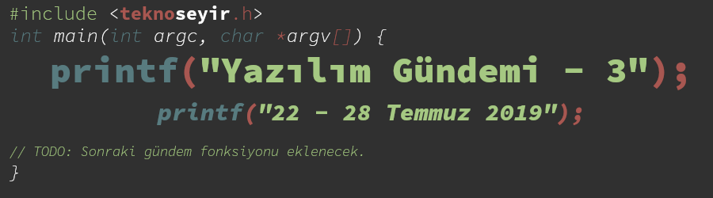
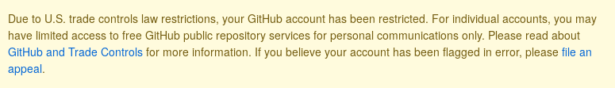
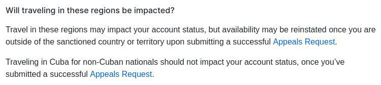
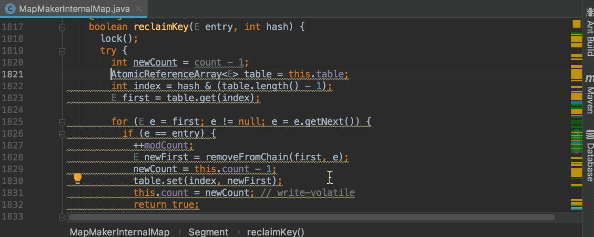
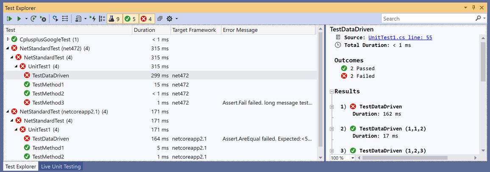
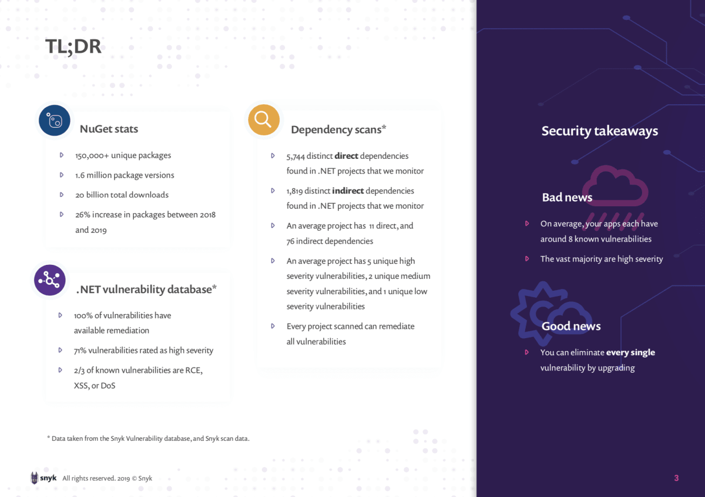

Yazılım Gündemi - 3
22-28 Temmuz 2019
İçindekiler
- 1. GitHub, Amerika yaptırımlarını uygulamaya başladı
- 2. PHP 7.4.0 Beta 1 yayınlandı
- 3. JDK 13 ile gelecek özellikler belli oldu
- 4. Apache NetBeans 11.1 duyuruldu
- 5. Intellij IDEA 2019.2 yayınlandı
- 6. Visual Studio 2019 16.2 ve 16.3 Preview 1 duyuruldu
- 7. .NET Ekosistemi için güvenlik raporu yayınlandı
- 8. Diğer Haberler
- 9. Lisans

< Önceki Gündem | 22-28 Temmuz 2019 | Sonraki Gündem >
1 GitHub, Amerika yaptırımlarını uygulamaya başladı

Şekil 2: Kısıtlanan kullanıcıların ekranlarında çıkan uyarı metini
GitHub bu kararları yeni mi uygulamaya başladı, yoksa daha önceden de uygulanıyordu fakat bu kadar sert mi değildi, bilemiyorum fakat bu hafta birkaç olaya karıştığı için gündem oldu. Bu olaylar şu şekilde:
- Kırımlı bir geliştiricinin GitHub hesabının kısıtlanması
- Iranlı bir geliştiricinin GitHub hesabının kısıtlanması
Kısıtlamaların tam listesi olmamakla birlikte geliştiricilerin şu an maruz kaldıkları kısıtlamalar bu şekilde:
- GitHub Pages üzerinde barındırdıkları web siteleri ulaşılamaz oldu (GitHub 404 sayfası gönderiyor).
- Yeni özel depo oluşturamıyorlar.
- Var olan özel depolarına erişemiyorlar.
git clonekomutu da 403 kodu dönüyormuş.
Kısıtlamalar nereye kadar gidecek bilinmiyor. Geliştiriciler projelerine devam edip, edemeyecekleri konusunda endişeliler. GitHub'ın ilgili sayfasında bu ülkelerdeki kişiler ücretsiz hizmetlerden faydalanabilecekler deniyor fakat özel depolar ücretsiz olmasına rağmen, bu kullanıcıların özel depoları kısıtlanmış ve erişilemez durumda. Geliştiriciler kodlarına, hata takip sistemine ve dokümanlarına erişimi kaybettiler. GitHub'a mail atıp, kapatılmış depoların yedeklerini istemelerine rağmen geri dönüş olumsuz olmuş. Resmen kodlarına el koymuşlar yani.
Bu ülkelerde yaşayan geliştiriciler de GitHub'a açık mektup yazarak, bir nevi imza kampanyası başlatmışlar. Geliştirici camiasından insanlar konuyu HackerNews ve Reddit gibi platformlardan tartışmaya devam ediyor.
Her ne kadar Amerika merkezli bir şirket olarak yasaları uygulamak zorunda olsalar da, GitHub'ın tavırları beni rahatsız etti. Özellikle bu kullanıcılara hiç haber vermeden, önceden uyarı yapmadan ve verilerini alma imkanı sunmadan bir gecede bu işleri yapmaları bende biraz art niyet duygusu uyandırdı ve GitHub üyeliğimi sorgulamaya başladım. Üstelikte Türkiye'ye de yaptırımlar konusu gündemdeyken endişem daha da arttı ve GitHub'daki tüm depolarımı bilgisayarıma indirdim fakat Türkiye'nin de bu listeye girmesi durumunda Türkiye bilişim sektöründe yaşanacakları düşünemiyorum bile!

Şekil 3: Üstelik bu ülkelere gitmiş ve oradan GitHub'a bağlanmışsanız, bu kısıtlamalar sizin hesabınıza da gelebilir ve tekrar hesabınızı açtırmak için o ülkelerden birinde yaşamadığınızı kanıtlamanız için form doldurmanız isteniyor. Formda istenen bilgilere baksanıza!
Levent Abi bir kez daha haklı çıktı, söylemi tekrar hatırlayalım: "Bulut dediğin başkasının bilgisayarıdır. Bir gün gelir de, 'Sana hizmet vermiyorum kardeşim' derse, öylece kalırsın ortada". Bir kere daha bulut sistemlere güvenmememiz gerektiğini -umarım- öğrenmiş olduk. Güya internette gerçek hayattaki gibi ülke sınırları yoktu, güya internetteyken fiziksel olarak nerede olduğumuzun bir önemi yoktu…
2 PHP 7.4.0 Beta 1 yayınlandı
22 Temmuz'da yeni özellik eklenmesi dondurulan (feature freeze) PHP 7.4'ün Beta 1 etiketine sahip ilk sürümü ise 25 Temmuz'da duyuruldu. PHP Wiki sayfasındaki takvime göre PHP 7.4.0 sürümün yayın sürecinin bu şekilde olması bekleniyor:
| Tarih | Sürüm |
|---|---|
| 08 Ağustos 2019 | Beta 2 |
| 22 Ağustos 2019 | Beta 3 |
| 05 Eylül 2019 | RC 1 |
| 19 Eylül 2019 | RC 2 |
| 03 Ekim 2019 | RC 3 |
| 17 Ekim 2019 | RC 4 |
| 31 Ekim 2019 | RC 5 |
| 14 Kasım 2019 | RC 6 |
| 28 Kasım 2019 | Final |
PHP 7.4.0 ile gelecek bazı özellikler bu şekilde:
2.1 Tipli sınıf özellikleri (Typed Properties)
PHP'de sınıf kodlarken artık sınıfın özelliklerini bu şekilde tipli tanımlayabileceğiz:
class Kullanici { public int $id; public string $isim; public function __construct(int $id, string $isim) { $this->id = $id; $this->isim = $isim; } }
2.2 Arrow Functions
Önceden bu şekilde olan kullanımı:
$sayilar = [1, 2, 3, 4, 5, 6]; $kareleri = array_map(function($sayi) { return $sayi * $sayi; }, $sayilar); // 1, 4, 9, 16, 25, 36
Artık bu formatta kullanabileceğiz:
$sayilar = [1, 2, 3, 4, 5, 6]; $kareleri = array_map(fn($sayi) => $sayi * $sayi, $sayilar); // 1, 4, 9, 16, 25, 36
2.3 Null Coalescing Assignment Operator
Çevirisini yapamadım fakat bu operatör Türkiye'den birisi tarafından eklenen bir özellik. Kendisini GitHub'da midorikocak kullanıcı adıyla bulabilirsiniz. Gelelim yeni operatörümüze, bu operatör sayesinde önceden bu şekilde yazdığımız kod parçasını:
if (!isset($dizi['anahtar'])) { $dizi['anahtar'] = varsayilaniHesapla(); }
Artık aşağıdaki gibi tek satırda yazabileceğiz:
$dizi['anahtar'] ??= varsayilaniHesapla();
Bu katkısı için kendisine teşekkür ediyoruz.
Yazının fazla uzamaması için bu konuyu burada bırakıyorum ama eğer ilgiliyseniz yeni özelliklerin tamamına buradan erişebilirsiniz.
3 JDK 13 ile gelecek özellikler belli oldu
Geçen haftaki gündemde JDK 13 sürümünün "Rampdown" ikinci aşamaya geçtiğini duyurmuştum. Bu hafta da yeni eklenecek bir özelliğe bakalım. Diğer özelliklere de baktım fakat uzun zamandır Java yazmadığım için tam anlayamadım. Ben de anladığım özelliği yazayım dedim :) Diğer özellik ve değişiklikler için konu başlığına eklediğim bağlantıya tıklayabilirsiniz ya da QCon isimli konferansta Oracle çalışanı Java Dil Mimarı Brian Goetz tarafından yapılan bu sunumu izleyebilirsiniz: Java Futures, 2019 Edition.
3.1 Çok satırlı String ifadeler
Önceden Java'da bir string değişken içerisine uzun bir ifade yazacağımız zaman, bu şekilde bir yöntem izliyorduk:
String html = "<html>" + "<body>" + "deneme" + "</body>" + "</html>";
Bu şekilde bir kullanımda string parçaları birleştirildiği için biraz da olsa performansı etkiliyordu fakat artık Python'da görmeye alıştığımız 3 tırnak işaretli şu yapı Java'ya da geldi:
String html = """ <html> <body> deneme </body> </html> """;
4 Apache NetBeans 11.1 duyuruldu
- Java EE 8 desteği,
- Payara entegrasyonu,
- GlassFish 5.0.1 desteği,
- Tek dosya kaynak kodu programlarını çalıştırma (PEP330: Launch Single-File Source-Code Programs)
- Fonksiyonun parametre isimlerini ipucu olarak gösterme.
switchiçerisindeki çoklucasekullanımı için kod tamamlama özelliği
Eklenen diğer özelliklerin tam listesi ve detaylar için konu başlığındaki bağlantıya tıklayabilirsiniz.
5 Intellij IDEA 2019.2 yayınlandı

Şekil 4: Tekrarlanan Kod Bloğu Dedektörü
NetBeans'e güncelleme gelir de, Intellij IDEA hiç geri kalır mı ?! Yapıştırmış güncellemeyi:
- Java 13 desteği,
- Otomatik tamamlama penceresi yanlış yazmalara karşı iyileştirilmiş,
- Çalışan Docker konteynerindeki dosya sistemine erişme,
- Açılış sürelerini kısaltan performans iyileştirmeleri,
- Her klasörün kendine özel kod stili olabilecek,
- 20'nin üzerinde dil için söz dizimi (syntax) renklendirme,
Eklenen diğer özelliklerin tam listesi ve detaylar için konu başlığındaki bağlantıya tıklayabilirsiniz.
6 Visual Studio 2019 16.2 ve 16.3 Preview 1 duyuruldu
- Test Expolorer aracında iyileştirmeler,
- Microsoft Edge Insider ile JavaScript hata ayıklama desteği,
- C++ tarafında MSBuild projeleri için Clang/LLVM desteği,
- Daha fazla ekran alanını için tüm araç çubuklarını gizleyebilme

Şekil 5: Yenilenmiş Test Explorer
Eklenen diğer özelliklerin tam listesi ve detaylar için konu başlığındaki bağlantıya tıklayabilirsiniz.
7 .NET Ekosistemi için güvenlik raporu yayınlandı

8 Diğer Haberler
- FTP sunucusu ProFTPD'de güvenlik açığı tespit edildi: CVE-2019-12815. Alternatif
- Lyft, otonom araçlarının ham sensör verilerini CC-BY-NC-SA-4.0 lisansı altında paylaştı: Lyft Level 5 AV dataset.
- GitLab 12.1 sürümü yayınlandı
- .NET Core 3.0 Preview 7 duyuruldu.
- Microsoft, metin analiz ve görselleştirme aracını açık kaynak olarak yayınlandı: browsecloud
- Microsoft, OpenAI organizasyonuna 1 milyar dolar yatırım yaptı.
- Microsoft Security Response Centre, Rust ile ilgili ilk blog yazısını yayınladı: Why Rust for safe systems programming
- SQL Server 2019 CTP 3.2 sürümü duyuruldu.
- Julia programlama dili 'composable multi-thread parallelism' özelliği kazandı.
- Rust derleyicisi hızlanmaya devam ediyormuş.
- Paralel programlama sistemi Legion, 19.06.0 sürümünü duyurdu.
- Geliştiricisi Jai programlama dili için durum raporu videosu hazırlamış. Bu programlama dili Twitch platformunda canlı yayınlarda geliştiriliyor. Geliştiricinin twitch kanalı: https://www.twitch.tv/naysayer88
- Amazon'un sesden yazı elde etme hizmeti Amazon Transcribe, artık WebSockets destekliyor.
- Mozilla IoT takımı, WebThings projesi altında geliştirdikleri WebThings Gateways aracının 0.9 sürümünü duyurdu. GitHub Deposu
- Google Chrome tarayıcısının Web MIDI API sisteminde değişiklik var.
- OpenJDK takımı, Project Valhalla LW2 Prototipini duyurdu.
- Git istemcisi Fork 1.0.82 sürümünü duyurdu.
- Python için video işleme kütüphanesi olan VidGear, v0.1.5 sürümünü duyurdu.
- Go yorumlayıcı projesi açık kaynak olarak yayınlandı: yaegi. GitHub Deposu
- Tek Sayfalık Uygulamalar (Single Page Applications) için geliştirilmiş framework mithil.js v2.0.1 sürümünü yayınladı.
- Bellek üzerinde hassas verileri depolamaya yarayan Go kütüphanesi MemGuard, v0.18.1 sürümünü duyurdu.
- Rust ile platformlar-arası grafiksel kullanıcı arayüzleri geliştirmeye olanak sağlayan kütüphane açık kaynak olarak yayınlandı: Sauron-native
- C/C++ için platformlar arası (cross-platform) paket yöneticisi Hunter, v0.23.205 sürümünü duyurdu.
- Tüm projeler ve sistemler için evrensel proje yöneticisi olma iddiası taşıyan GuPM isimli araç 1.2.0 sürümünü duyurdu.
- Sinuous UI kütüphanesinin v0.12.5 sürümü çıktı.
- SQL raporlama aracı Poli v0.9.0 sürümü yayınlandı.
9 Lisans

Yazılım Gündemi - 3 yazısı Eren Hatırnaz tarafından Creative Commons Atıf-GayriTicari-AynıLisanslaPaylaş 4.0 Uluslararası Lisansı (CC BY-NC-SA 4.0) ile lisanslanmıştır.